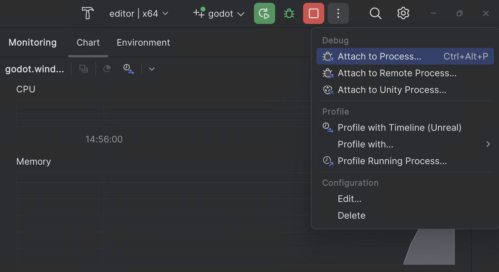

JetBrains Rider
JetBrains Rider là một IDE thương mại của JetBrains dành cho C++, C# và GDScript, sử dụng cùng hệ thống solution với Visual Studio.
Ghi chú
Tài liệu này dành cho việc đóng góp vào game engine, không phải để dùng JetBrains Rider làm trình soạn thảo C# hay GDScript. Để viết mã C# hoặc GDScript trong trình soạn thảo bên ngoài, xem hướng dẫn C# về cấu hình trình soạn thảo bên ngoài.
Import dự án
Mẹo
Nếu bạn đã dùng Visual Studio làm IDE chính, bạn có thể dùng cùng tệp solution đó trong Rider. Rider và Visual Studio dùng cùng định dạng solution, nên bạn có thể chuyển đổi giữa hai IDE mà không cần tạo lại tệp solution. Các cấu hình debug cần được thay đổi khi chuyển từ IDE này sang IDE kia.
Nếu bạn bắt đầu từ đầu, hãy làm theo hướng dẫn, cụ thể là:
Cài đặt tất cả các phụ thuộc.
Xác định lệnh scons để biên dịch cho một nền tảng cụ thể.
Cung cấp cho scons các tham số bổ sung để yêu cầu tạo tệp solution:
Thêm vsproj=yes dev_build=yes vào lệnh scons
Tham số vsproj cho biết bạn muốn tạo solution Visual Studio. Tham số dev_build đảm bảo các debug symbol được bao gồm, cho phép bạn chẳng hạn chạy từng bước qua mã bằng breakpoint.
Ghi chú
Mỗi lần chạy SCons chỉ tạo tệp .generated.props cho một Solution Configuration duy nhất. Hãy chạy SCons một lần cho mỗi target bạn định dùng:
scons vsproj=yes dev_build=yes target=editor
scons vsproj=yes dev_build=yes target=template_debug
scons vsproj=yes dev_build=yes target=template_release
Mở tệp
godot.slnđã được tạo trong Rider.
Ghi chú
Đảm bảo rằng Solution configuration phù hợp đã được chọn trên thanh công cụ của Rider. Nó ảnh hưởng đến việc phân giải SDK, phân tích mã, build, chạy, v.v.
Biên dịch và gỡ lỗi dự án
Rider đi kèm một trình gỡ lỗi tích hợp có thể dùng để debug dự án Godot. Bạn có thể khởi chạy trình gỡ lỗi bằng cách nhấn biểu tượng Debug ở đầu màn hình; cách này chỉ hoạt động với Project Manager, nếu muốn debug trình chỉnh sửa, bạn cần cấu hình trình gỡ lỗi trước.

Nhấp vào tùy chọn Godot > Edit Configurations ở đầu màn hình.

Đảm bảo các giá trị sau cho C++ Project Run Configuration:
Exe Path :
$(LocalDebuggerCommand)Program Arguments:
-e --path <path to the Godot project>Working Directory:
$(LocalDebuggerWorkingDirectory)Before Launch có giá trị là "Build Project"
Điều này sẽ yêu cầu tệp thực thi debug dự án được chỉ định mà không mở Project Manager. Hãy dùng đường dẫn gốc đến thư mục dự án, không phải đường dẫn tệp project.godot.

Cuối cùng, nhấp "Apply" và "OK" để lưu các thay đổi.
Khi bạn nhấn biểu tượng Debug ở đầu màn hình, JetBrains Rider sẽ khởi chạy trình chỉnh sửa Godot với trình gỡ lỗi được gắn vào.
Ngoài ra, bạn có thể dùng Run > Attach to Process để gắn trình gỡ lỗi vào một instance Godot đang chạy.

Bạn có thể tìm instance Godot bằng cách tìm kiếm
godot.editorrồi nhấpAttach with LLDB

Debug visualizer
Debug visualizer tùy chỉnh cách hiển thị các cấu trúc dữ liệu phức tạp trong khi debug. Các tệp "natvis" (viết tắt của "Native Visualization") tích hợp sẵn trong Godot sẽ được dùng tự động.
Ghi chú
Trên macOS và Linux, hỗ trợ natvis yêu cầu Rider 2026.2 trở lên.
Unit test
Tận dụng hỗ trợ doctest của Rider. Vui lòng tham khảo hướng dẫn.
Profiling
Vui lòng tham khảo hướng dẫn profiling.
Vui lòng tham khảo tài liệu JetBrains Rider để biết thông tin cụ thể về IDE của JetBrains.
Các vấn đề đã biết
Debug bản build Windows MinGV - symbol không được nạp. Đã báo cáo tại RIDER-106816.